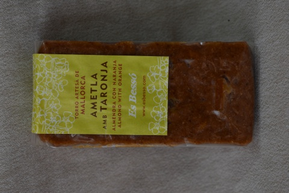
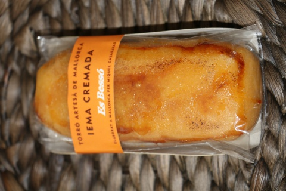
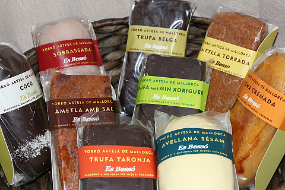
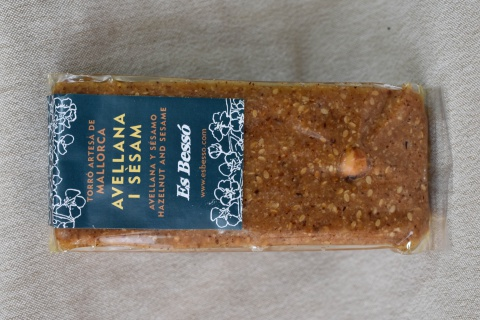
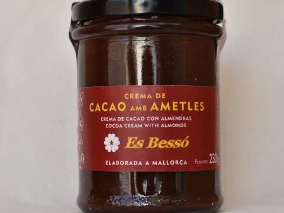
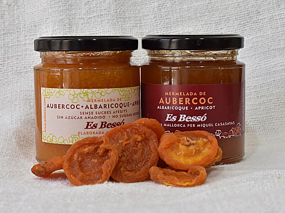
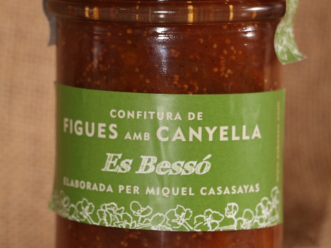
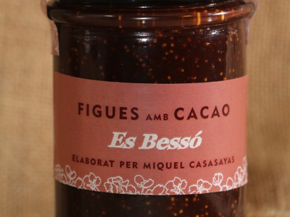
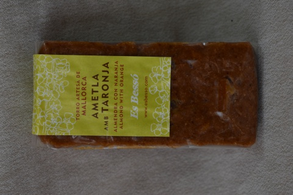
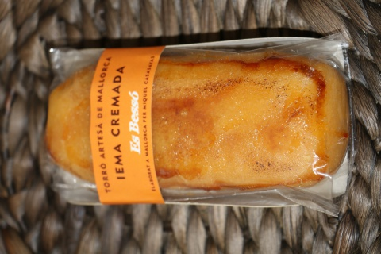
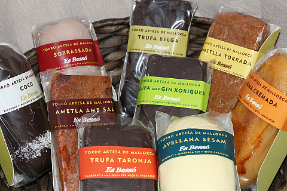
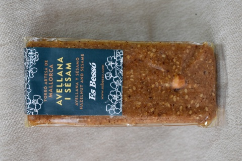
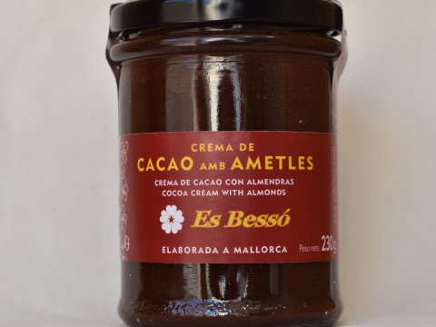
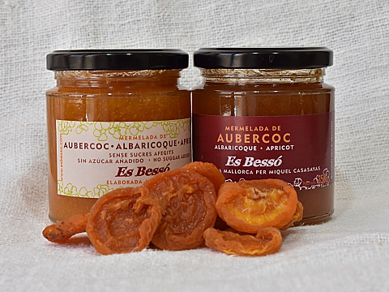
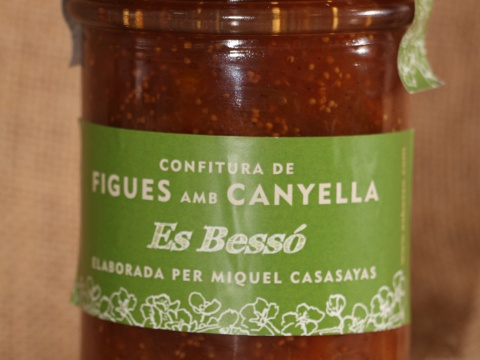
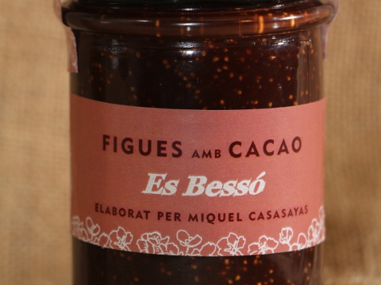

MERMELADAS
Fabricamos mermeladas pensando en frutas de kilómetro cero, en la misma isla. Tenemos naranja, albaricoque, higos con canela... Creemos que debemos daros la opción de que opteis a mermeladas sin azúcar añadido por razones de imperiosa salud o por si simplemente quereis tomar menos azúcar, ya que un exceso no es saludable. Procuramos no cocer mucho la fruta para que conserve su sabor original. También añadimos puro zumo de nuestro inacabable limonero. Así ayudamos a preservar la mermelada de microorganismos y además mantiene el color de la fruta. Para no espesarla a base de azúcar y cocción, añadimos pectina de frutas, la solución más utilizada en la mayoría de mermeladas. Ni que decir tiene que toda la fruta que utilizamos es fresca. Ni precongelada ni predeshidratada. La teneis normalmente en formato de 250gramos, pero algunas también están en 400g.
ALMENDRITAS
Las almendritas que veis las compramos a almacenes con la garantía de que están recogidas en las islas. Al llegar a nuestro local, las tostamos y enseguida les damos el sabor correspondiente y las envasamos para que no pierdan sabor ni textura. Podeis escoger entre los sabores de romero con otras hierbas, pimentón dulce, pimentón picante, azúcar y sal, limón... Se trataba de hacer un snack algo diferente que la típica con sal. Seguiremos innovando con sabores nuevos. En nuestro facebook podeis sugerirnos aquello que se os ocurra.
CREMA DE CACAO CON ALMENDRAS
Esta crema no es la habitual que os podeis encontrar en un supermercado. Queríamos diferenciarnos claramente en textura, sabor... No queríamos añadir leche aunque es un buen texturizante, porque no la necesita y preferimos que noteis mejor el sabor del cacao. Tampoco contiene grasa de palma. Los ingredientes son: almendras, cacao parcialmente desgrasado, azúcar, aceite de girasol, aceite de oliva virgen extra y un emulgente (lecitina de soja) para que la textura sea homogénea. Aún así si os gusta m&aás la del s&uacúper, no podemos hacer nada.
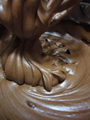 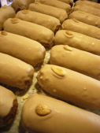Para una correcta vizualización de la página web usa Google Chrome.
Aviso legal: Miquel Casasayas Talens, ES BESSÓ - NIF 43.061.058k - núm. registro sanitario: 23003679/ib
c/Santa Catalina n.72 - 07110 - Bunyola - Baleares - 653 92 97 33 - info@esbesso.com